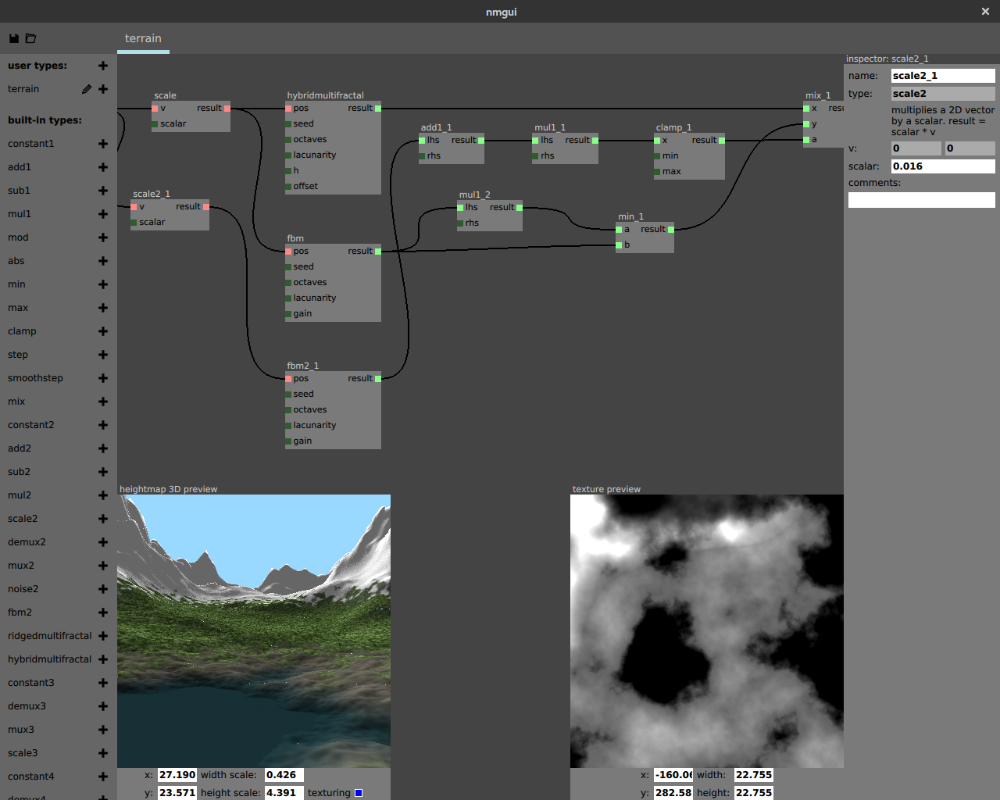

An in-game procedural terrain and content generation tool
Changes to the terrain may be viewed immediately in a high-resolution preview.
ScreenshotsSave terrain algorithms as compact json files and delay generation of heightmaps until run-time. Bandwidth and storage required are only a few kB. Integrate support for procedural terrains in your game using the Noise Modeler Library.
Library documentationEdit terrain interactively by constructing a graph using a flow-graph interface.
User's guideNoise Modeler is an open-source project released under the zlib license. You are free to use the project for your closed-source game. We need your help growing and improving. Issues and suggestions are welcome in our Github repository.
Contribute on GitHub